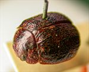
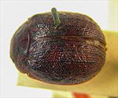
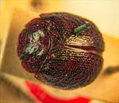
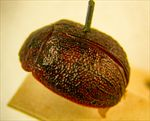
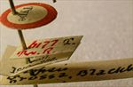
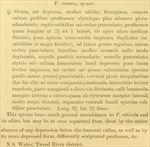

Click on images to enlarge
.jpg){kind=link}

Paropsis grossa type specimen, oblique view
.jpg){kind=link}

Paropsis grossa type specimen, dorsal view
.jpg){kind=link}

Paropsis grossa type specimen, dorsal view
.jpg){kind=link}

Paropsis grossa type specimen, lateral view
.jpg){kind=link}

Paropsis grossa type specimen, labels
{kind=link}

Paropsis grossa, description
Name
Trachymela grossa (Blackburn, 1896)
Type specimen
Location: BMNH
Label data: “Type” (red-bordered circle), “6177 Tw.R”, “Blackburn coll. 1910-236.”, “Paropsis grossa Blackb.”
Female; Size: 7.85 x 6.1 x 3.3 mm; A-A: 1.39 mm; HCE: 19 % (estimated from photo of type specimen). Note that the specimen is actually somewhat smaller than indicated by Blackburn in his description.
Single seta on each trochanter; two large black patches on head, foveal peak is black and smooth.
Original description
[Descriptions are shown in figures, translated from Latin using ChatGPT, 03/2026]
(Female) Ovate, rather depressed, moderately shining; ferruginous, underside, legs, prothorax and elytra more or less shaded with pitchy; head rather finely and fairly closely punctulate; prothorax longer than broad in the ratio 2½ to 1, widened beyond the middle, behind the apex transversely impressed, doubly (namely finely and more strongly) rugulose, less densely punctate, sides moderately arcuate, not at all flattened, posterior angles rounded; scutellum punctulate; elytra not depressed beneath the humeral callus, behind the base slightly impressed, fairly closely and rather coarsely subseriately (posteriorly a little less coarsely) punctate, furnished with irregular pitchy verrucae (here and there joined like ribs), interstices slightly rugulose, marginal area scarcely distinct from disc, humeral callus much more distant from the suture than from the lateral margin; basal ventral segment sparsely finely punctulate. Length 3⅗ lines (8.1 mm), width 2⅘ lines (6.3 mm).
Notes
Blackburn (1896) deals with T. grossa as part of his Subgroup iii (i.e., those species without "strongly marked characters", whose greatest height is not or scarcely in front of the middle of the elytral margin and whose elytra are not depressed under the humeral callus). Within that group, he characterises it as:
(1) Elytra with a distinct postbasal impression on disc;
(2) the elytral margin (viewed from the side) straight or but little sinuous;
(3) elytral interstices not, or but very feebly, rugulose, not obscuring the punctures;
(4) prothorax not, or but little, rugulose;
(5) depressed species, upper outline (viewed from the side) more or less straight, humeral callus exceptionally near lateral margin;
(6) elytral margin (viewed from the side) distinctly though not strongly sinuous; form wide.
This is almost certainly Ta31. It is closely related to T. sloanei and T. interioris, and though Blackburn describes all 3 of these species in the same paper (and they appear close together in his key), he does not compare them in the descriptions.
References
Blackburn, T. 1896, "Revision of the genus Paropsis. Part I", Proceedings of the Linnean Society of New South Wales, vol. 21, no. 4, 637-693 (page 681).
Copyright © 2026. All rights reserved.